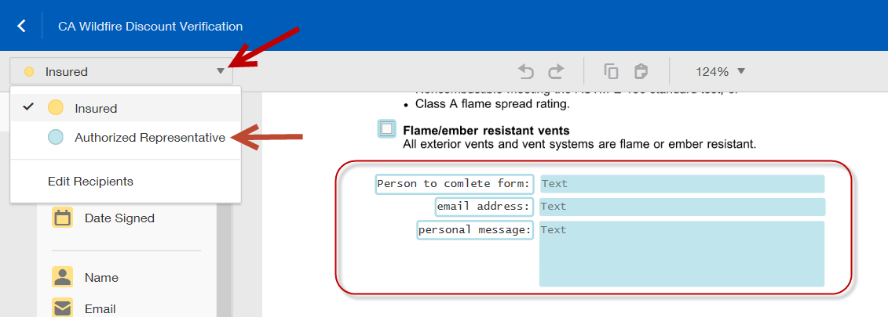
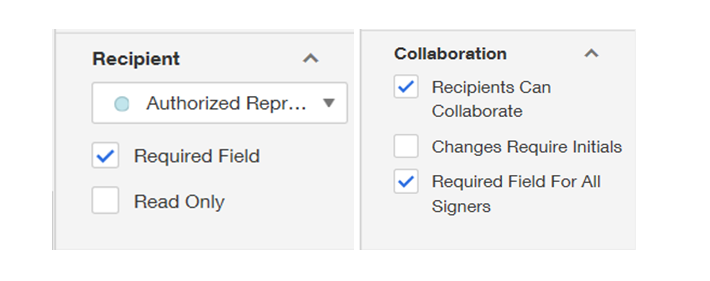
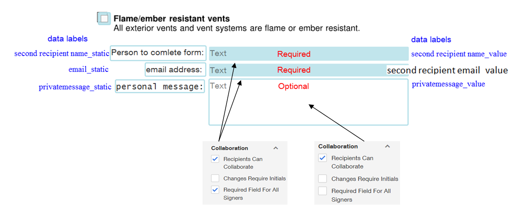
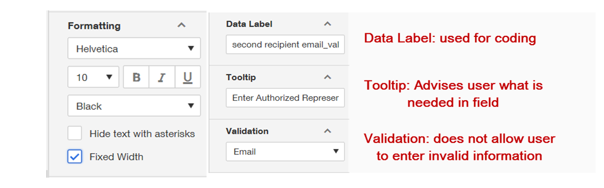

DocuSign Guide for Chubb
May 10, 2018
DocuSign SandboxHow to Create a New Template
1. Under the Template tab, click the 'New' button. You can select create new or upload a template if you are updating a current form.

2. Name the form templates to match the naming convention standards (see Forms Specific Requirements document).
- Add template description (See Forms Specific Requirements document).
- Name: StateAbbrFormNameYYYYMMDD (ex. CAUM_UIM SELECTION FORM20180801)
- Description: Uninsured and Underinsured motorists Protection (UM/UIM) Selection Form for California
3. Upload Form to build template over.

4. Set Signing Order. If the form will need to go to a third party, you will need to add a second recipient, otherwise the only recipient would be 'Insured'
-
Scroll down to Advanced Options and select 'Edit'
- Under 'Sender Settings' uncheck 'Affix envelope to top left of every document page'
- Click 'Save'

- Select 'Next' in the upper righthand corner.

- Navigate to the custom fields and drag the Envelope ID in the bottom left corner of the template.

- All the input fields in one page should be anchored to one common 'String' in that page.
- Do not create any conditional logic until all fields are added and named. The first conditional logic should be for the Bypass.
- If we place an input field over a line in the form, we follow the left alignment. The signature field here we can align to the left.
- Try placing template fields slightly lower than where they should be as they tend to rise when testing the template.
- 'Field Order' should contain the sequential order for tabbing through the template.
- For all text box fields in the template where we need an input, we should keep the 'Fixed width' option checked to make sure the entered data does not overflow. You can find this option in the 'Formatting' part of text box properties at the right hand side. And we can add tooltips to the all input fields wherever required, which appears as a help text to the signer when he hovers over a particular field. Font: Helvetica, Size: 10.
- Radio Buttons - should be used for when only one option can be selected from a list of options. If multiple options can be selected, use checkboxes.

- Creating the By Pass
- Add to same page as signature.
- Group Label must be 'Bypass selection Q4625000 (2018)'. If creating a new form, the year is not required on a new template. This is due to the need of having a unique Bypass name.
- Bypass also needs to be anchored.
- Bypass fields can be found on the 'Custom Fields Tab'.
- The 'Bypass_Yes' and 'Bypass_No' go under the Bypass notes and are included in conditional logic.
- Check the 'Agree to Sign' box so the template is opened with 'Agree to Sign' logic enabled.
- Set the conditional logic of the Bypass before any other conditional logic.


- Downloading existing template
- Promote to different inbox
- To copy if not in current sandbox.
As per Robann (rmodrowsky@chubb.com)
- Conditional Logic (CA UM/UIM)
- The below example uses a text box (a) with a '1' in white text to show if 'reject coverage' is selected. The '1' can be used in a formula for further qualification of conditional logic.
- This example used the '1' to turn off further boxes because coverage was rejected by having conditional logic setting 'Click on the fields to show when trigger field' = 0 as the formula field would be 0 if the conditional text field did not show if rejected.
- Formatting of the text field:
- Requirement Field
- Read Only
- White text font
- Validation: Numbers
- The below example uses a text box (a) with a '1' in white text to show if 'reject coverage' is selected. The '1' can be used in a formula for further qualification of conditional logic.
Third Party Instructions
1. Creating text boxes that will be used to send to third party signer. Although the insured will complete this, select the person who will receive the document from the drop down menu.

2. For the text boxes that indicate what to enter in the adjcent boxes, check Read Only
under Recipient and Recipients Can Collaborate
under Collaboration. Need to add data label (see Forms Specific Requirements document).

- All the input fields in one page should be anchored to one common
String
in that page. - In the below six fields: the text box for person name & email values (red pointing) should be only required fields here. Private message box should be optional. The Data Labels for the below six fields should be exactly as described in the Forms Requirement Document as IT is programming to pull the third parties information based on these names.
- In order for MULTIPLE recipient eSignature forms to function correctly, the template's Data Label for the email address of the second recipient (ie, Inspector, Authorized Representative, Licensed Builder/Contractor, etc.) must always be
second recipient email_value
.
- In order for MULTIPLE recipient eSignature forms to function correctly, the template's Data Label for the email address of the second recipient (ie, Inspector, Authorized Representative, Licensed Builder/Contractor, etc.) must always be

- For all text box fields in the template where we need an input, we should keep the
Fixed width
option checked to make sure the entered data does not overflow. You can find this option in theFormatting
part of text box properties at the right hand side. And we can add tooltips to the all input fields wherever required, which appears as a help text to the signer when he hovers over a particular field. Font: Helvetica, Size: 10. Enter instructions for the user in theToolTip
and useValidation
so that correct information is entered (ex. ZIP or Email – will require specifically formatted responses)

- If we place an input field over a line in the form, we follow the left alignment. The signature field here we can align to left.